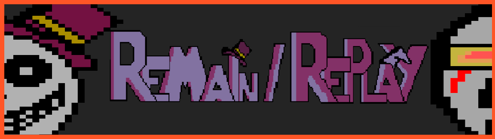

Remain/Replay
Remain/Replay fue desarrollado por mí y otro compañero para una asignatura llamada diseño de videojuegos. Es un juego de puzzles donde irás descubriendo la historia progresivamente mientras avanzas por las distintas habitaciones. Fue creado con Construct2.
Es recomendado jugarlo con auriculares.
¿Cómo instalarlo?
Simplemente descarga el archivo .zip, extrae todos los archivos en la misma carpeta, selecciona la versión de tu Sistema Operativo y haz doble click en nw.exe para jugarlo.